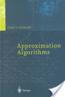

| Randomizados |
Randomized Algorithms |
|||
| Randomized Algorithms | Probability and Computing | Introdução aos Algoritmos Randomizados | ||
| (Raghavan & Motwani) | (Upfal & Mitzenmaker) | (Figueiredo, Fonseca, Lemos & Pereira de Sá) | ||
 |  |  |
||
| | ||||
| NP-Completude |
NP-Completeness |
|||
| Computers and Intractability | ||||
| (Garey & Johnson) | ||||
 | ||||
| | ||||
| Aproximativos |
Approximation Algorithms |
|||
| Approximation Algorithms | Introduction to Algorithms | Uma Introdução Sucinta aos Algoritmos de Aproximação | ||
| (Vazirani) | (Cormen, Leiserson, Rivest & Stein) | (Cerioli, Feofiloff, Fernandes & Miyazawa, editores) | ||
|  |  |  |